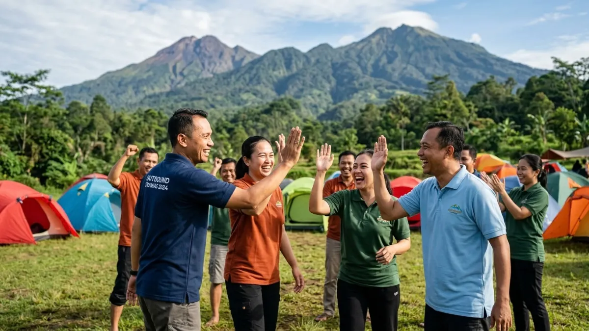

Tempat outbound Trawas dengan view gunung terbaik umumnya berada di kawasan lereng Gunung Penanggungan dan Gunung Welirang, seperti Duyung Trawas Hills dan Alas Pelangi Trawas, dengan biaya masuk mulai sekitar Rp10.000 hingga Rp50.000 per orang di 2026.
DAFTAR ISI
- 1. Apa Itu Tempat Outbound Trawas dengan View Gunung
- 2. Siapa yang Cocok Menggunakan Tempat Outbound di Trawas
- 3. Mengapa View Gunung Menjadi Nilai Tambah Lokasi Outbound
- 4. Rekomendasi Tempat Outbound Trawas dengan View Gunung
- 5. Berapa Kisaran Biaya Outbound di Trawas dengan View Gunung
- 6. Bagaimana Cara Memilih Lokasi Outbound dengan View Gunung Terbaik
- 7. Kesalahan Umum saat Memilih Tempat Outbound di Trawas
- 8. Kesimpulan
- FAQ
1. Apa Itu Tempat Outbound Trawas dengan View Gunung
Tempat outbound Trawas dengan view gunung adalah lokasi kegiatan luar ruang di Kecamatan Trawas, Mojokerto, yang menawarkan aktivitas team building sekaligus pemandangan langsung ke arah Gunung Penanggungan, Welirang, atau Arjuno.
Kecamatan Trawas terletak di kaki pegunungan bagian selatan Mojokerto, berbatasan dengan wilayah Pacet dan Prigen.
Kontur tanah yang berbukit membuat hampir seluruh lokasi outbound di sini secara alami memiliki latar belakang gunung tanpa perlu bangunan tambahan.
Udara sejuk khas dataran tinggi juga menjadi daya tarik tersendiri dibandingkan lokasi outbound di dataran rendah.
Konsep outbound di kawasan ini biasanya menggabungkan permainan kelompok, camping ground, hutan pinus, dan kadang fasilitas tambahan seperti kolam renang atau area kuliner.
Sebagian lokasi dikelola sebagai resort atau taman wisata, sebagian lain berupa camping ground sederhana yang dikelola warga setempat.
2. Siapa yang Cocok Menggunakan Tempat Outbound di Trawas
Lokasi outbound di Trawas cocok untuk kelompok yang membutuhkan area luas dengan suasana alam, bukan sekadar ruang indoor.
Segmen yang paling umum memanfaatkan tempat ini antara lain:
- Perusahaan yang mengadakan gathering atau capacity building.
- Sekolah yang mengadakan karya wisata atau perkemahan.
- Komunitas hobi seperti fotografi dan pecinta alam.
- Keluarga yang ingin healing sambil beraktivitas ringan.
Jarak yang relatif dekat dari Surabaya, sekitar 50 kilometer, membuat Trawas sering dipilih untuk kegiatan satu hari maupun bermalam.

Peserta outbound camping di kawasan Trawas menikmati suasana alam pegunungan. (Ilustrasi)3. Mengapa View Gunung Menjadi Nilai Tambah Lokasi Outbound
View gunung menjadi nilai tambah karena memberi latar alami untuk dokumentasi kegiatan sekaligus suasana psikologis yang lebih menenangkan dibanding lokasi outbound biasa.
Beberapa hal yang membuat aspek ini penting:
- Latar Gunung Penanggungan, Welirang, atau Arjuno memperkuat kesan "healing" pada kegiatan gathering.
- Udara pegunungan yang lebih sejuk mengurangi kelelahan peserta dibanding outbound di area panas.
- Spot foto dengan latar gunung sering menjadi daya tarik tambahan untuk dokumentasi acara di media sosial internal perusahaan atau sekolah.
- Pemandangan terbuka membantu aktivitas seperti flying fox, war game, atau games kelompok terasa lebih lega dan tidak monoton.
4. Rekomendasi Tempat Outbound Trawas dengan View Gunung
Rekomendasi tempat outbound Trawas dengan view gunung terbaik mencakup Duyung Trawas Hills, Alas Pelangi Trawas, dan kawasan Ketapanrame yang berada langsung di kaki Gunung Penanggungan.
Beberapa lokasi yang umum dipilih:
- Duyung Trawas Hills di Desa Duyung, menawarkan camping ground, outbound training, air terjun, dan waterpark dengan tiket masuk sekitar Rp20.000 per orang, buka pukul 08.00 hingga 17.00 WIB.
- Alas Pelangi Trawas, berupa area camping di hutan pinus dengan tiket masuk sekitar Rp10.000, dapat digunakan selama 24 jam dan cocok untuk pemula yang baru pertama kali camping.
- Wisata Sawah Sumber Gempong di Ketapanrame, menawarkan kolam alami, wahana sepeda air, ATV, dan area camping dengan tiket masuk mulai Rp5.000 serta paket camping mulai Rp15.000 per orang.
- Fresh Green Trawas, buka pukul 08.00 hingga 17.00 WIB dengan tiket sekitar Rp50.000 untuk dewasa dan Rp30.000 untuk anak-anak, biasa dipakai untuk kegiatan kelompok skala menengah.
- Kawasan Pacet yang berdekatan dengan Trawas, seperti Bobocabin Pacet, menawarkan paket outing kantor lengkap dengan trekking, outbound, jeep off-road, ATV, dan paintball di tengah hutan pinus.
Detail lebih lengkap mengenai daftar lokasi ini dibahas pada artikel cluster khusus rekomendasi tempat outbound Trawas.
5. Berapa Kisaran Biaya Outbound di Trawas dengan View Gunung
Kisaran biaya outbound di Trawas dengan view gunung umumnya mulai dari Rp5.000 untuk tiket masuk dasar hingga puluhan ribu rupiah per orang untuk paket lengkap, tergantung fasilitas dan jenis aktivitas.
Beberapa faktor yang memengaruhi biaya adalah jenis lokasi, apakah camping ground sederhana atau taman wisata berfasilitas lengkap, jumlah peserta, jenis wahana tambahan seperti ATV atau flying fox, serta apakah sudah termasuk konsumsi dan penginapan. Pembahasan biaya secara rinci per lokasi tersedia pada artikel cluster mengenai kisaran harga outbound di Trawas.
6. Bagaimana Cara Memilih Lokasi Outbound dengan View Gunung Terbaik
Cara memilih lokasi outbound dengan view gunung terbaik di Trawas adalah dengan mempertimbangkan arah gunung yang terlihat, waktu kunjungan, jumlah peserta, dan jenis aktivitas yang dibutuhkan.
Beberapa langkah praktis yang bisa diikuti:
- Tentukan gunung mana yang ingin dijadikan latar utama, karena setiap lokasi punya sudut pandang berbeda ke Penanggungan, Welirang, atau Arjuno.
- Pilih waktu kunjungan pagi hari sebelum pukul 10.00 WIB agar langit lebih cerah dan gunung tidak tertutup kabut.
- Sesuaikan kapasitas lokasi dengan jumlah peserta, karena camping ground kecil kurang ideal untuk rombongan besar.
- Cek fasilitas pendukung seperti toilet, area parkir, dan tempat berteduh, terutama untuk kegiatan sekolah atau keluarga.
- Konfirmasi apakah lokasi menyediakan instruktur outbound atau hanya menyewakan tempat saja.
Panduan lengkap memilih paket dan mempersiapkan kunjungan dibahas lebih detail pada artikel cluster mengenai tips memilih outbound di Trawas.
7. Kesalahan Umum saat Memilih Tempat Outbound di Trawas
Kesalahan umum saat memilih tempat outbound di Trawas adalah tidak mengecek cuaca terlebih dahulu, memilih lokasi tanpa mempertimbangkan akses jalan, dan mengabaikan kapasitas area terbuka.
Beberapa kesalahan yang sering terjadi:
- Datang siang hari sehingga pemandangan gunung sudah tertutup kabut atau awan.
- Tidak mengonfirmasi ketersediaan tempat, terutama pada akhir pekan atau musim liburan sekolah.
- Memilih lokasi berdasarkan foto media sosial saja tanpa mengecek ulasan atau informasi akses jalan terbaru.
- Tidak menyiapkan pakaian hangat, padahal suhu di Trawas bisa cukup dingin pada pagi dan malam hari.
8. Kesimpulan
Tempat outbound Trawas dengan view gunung menawarkan kombinasi aktivitas kelompok dan pemandangan alam pegunungan yang sulit ditemukan di lokasi outbound dataran rendah.
Pemilihan lokasi sebaiknya disesuaikan dengan jumlah peserta, anggaran, dan waktu kunjungan agar pengalaman outbound sekaligus menikmati view gunung bisa didapatkan secara maksimal.